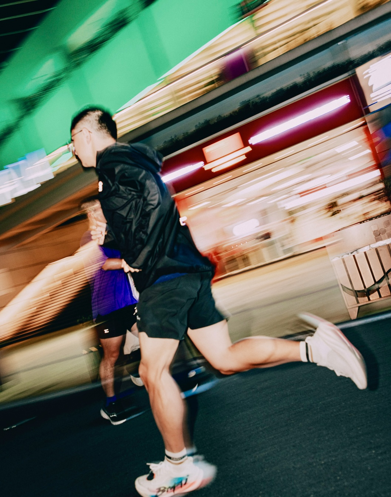

Shuo Jiang
Research interests:
Design Automation, Artificial Intelligence, Human-AI Interaction.
Other interests:
History, Philosophy, Engineering, Hiking.
Beyond the above, I also enjoy:
- Programming & Open Source
- Writing & Blogging
Contact me: Check out the Contact Page.
Connect: X, LinkedIn, GitHub.
Research & Publications (Google Scholar)
Arguing Machines: Human Supervision of Black Box AI Systems
Summary: Framework for providing human supervision of a black box AI system that makes life-critical decisions. We demonstrate this approach on two applications.
Cognitive Load Estimation in the Wild
Summary: Winner of the CHI 2018 Honorable Mention Award. We propose two novel vision-based methods for cognitive load estimation.